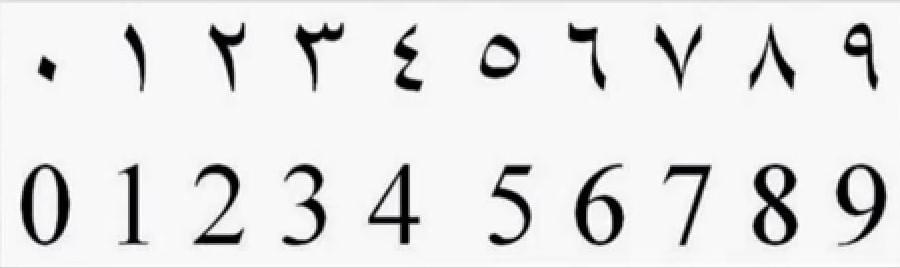
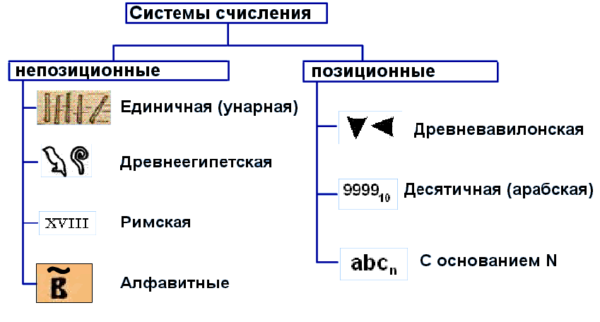
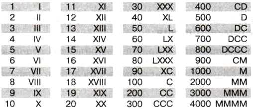
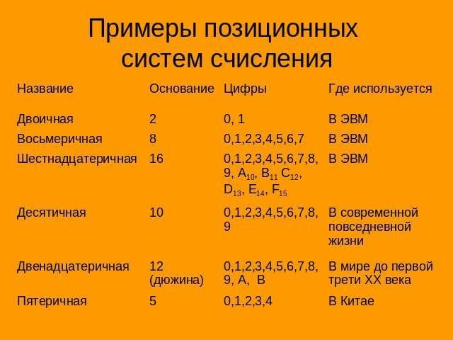
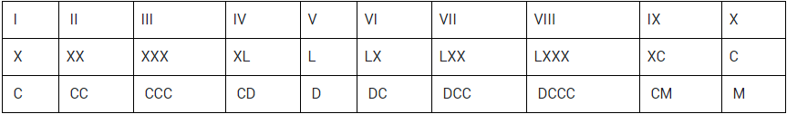
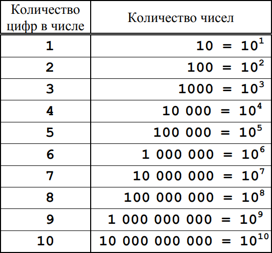
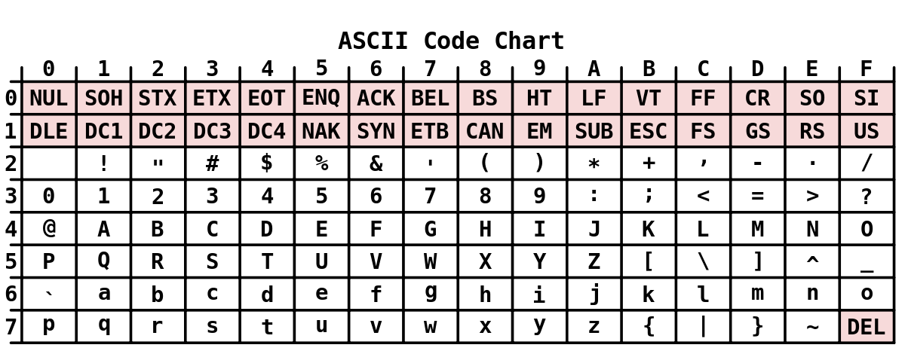
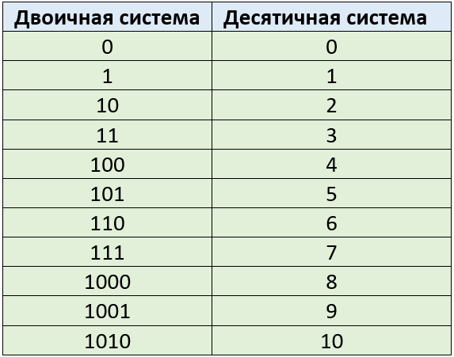
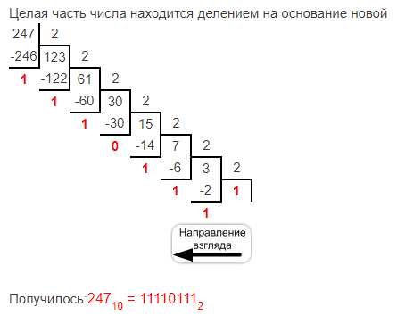

§ 1. Числа
1.1. Число
Число — основное понятие математики, которое обычно означает либо количество, размер, вес и т. д., либо порядковый номер, расположение в последовательности, код, шифр и т. д.
В этой главе мы будем иметь дело с множеством целых неотрицательных чисел, которое начинается с нуля и продолжается до бесконечности:
0, 1, 2, 3, 4, …
В информатике эти числа, начинающиеся с нуля, называются натуральными (но в математике эти числа представляют расширенное множество натуральных чисел, т. е. натуральные числа, дополненные нулем).
1.2. Цифра
Для представления и записи чисел используют специальные графические знаки — цифры. Например, число 256 состоит из трех цифр 2, 5 и 6, число 16 состоит из двух цифр 1 и 6, а число 0 — из одной цифры 0.
Цифра — условный знак для обозначения чисел. Числа записываются при помощи цифр. Цифра в узком смысле — один из 10 знаков десятичной системы счисления
0, 1, 2, 3, 4, 5, 6, 7, 8, 9.
1.3. Система счисления
Система счисления, или просто счисление, или нумерация,— набор конкретных знаков-цифр вместе с системой приемов записи, которая представляет числа этими цифрами.
Различные системы счисления могут отличаться друг от друга по следующим признакам:
1) разное начертание цифр, которые обозначают одни и те же числа;
2) разные способы записи чисел цифрами;
3) разное количество цифр.
Например, восточные арабы до сих пор используют ту же самую систему счисления, что и в большинстве стран, но начертание цифр у них иное. (Рис. 1)
Рис. 1 
По способу записи чисел цифрами системы счисления бывают позиционные и непозиционные(Рис. 2).
Рис. 2 
1.4. Непозиционная система счисления
Непозиционная система счисления — это такая система счисления, что в записи числа каждая цифра имеет всегда одно и то же значение, т. е. ее «вес» не зависит от местоположения в числе.
Одна из представителей непозиционных систем счисления является римская (Рис. 3).
Например, число I в римской системе означает один, число II означает 1 + 1, т. е. два, а число III — 1 + 1 + 1 = 3.
Рис. 3 
1.5. Позиционная система счисления
Позиционная система счисления характеризуется тем, что значение знака-цифры, «вес» цифры зависит от ее расположения в записи числа.
Например, число 1 в обычной десятичной системе счисления означает один. В числе 11 первая цифра справа означает 1, а вторая цифра справа — уже 10, поэтому число 11 означает 1 + 10, т. е. одиннадцать. Также число 111 = 100 + 10 + 1.
Основание системы счисления — это количество цифр позиционной системы счисления. Позиционные системы отличаются друг от друга своим количеством цифр, и поэтому именуется по своему основанию.
Например, десятичная система счисления, двоичная система. (Рис. 4)
Рис. 4 
§ 2. Обычные системы счисления
2.1. Римская система счисления
Римская система счисления — счисление древних римлян, используемое в современной цивилизации
В русском языке это счисление используется для написания:
1) века;
2) порядкового числительного;
3) месяца при указании даты и, очень редко;
4) года н. э. (нашей эры).
2.2. Семь римских цифр
Римская система счисления имеет свое собственное оригинальное начертание цифр. В частности, в этой системе отсутствует нуль.
Римская система основана на употреблении семи особых знаков — римских цифр, которые делятся на четыре знака десятичных разрядов:
I = 1, X = 10, C = 100, M = 1000
и три знака половин десятичных разрядов:
V = 5, L = 50, D = 500.
2.3. Запись римскими цифрами
Натуральные числа, т. е. целые положительные числа (без нуля), можно записывать при помощи повторения римских цифр, используя три следующие правила.
1. Правило сложения: если все цифры в числе по значению не возрастают, если считать слева направо, то они складываются.
Например:
II = 2, VI = 6, XI = 11 — правильно, IV = 6, XL = 60 — неправильно.
2. Правило вычитания: 1) сначала во всех парах, где меньшая цифра стоит перед большей, вычитается меньшая цифра из большей; 2) затем полученные результаты вместе с оставшимися цифрами подпадают под принцип сложения и складываются.
Например:
IV = 4, XIV = 14, XXIX = 29 — правильно, IVX = 6, IXX = 1 — неправильно.
3. Правило ограничения: 1) число записывается слева направо максимально возможными цифрами; 2) но четыре одинаковых десятичных знака подряд заменяются этим десятичным и следующим половинным; 3) но если при этой замене этот десятичный знак оказывается между двумя одинаковыми половинными, то эти три знака заменяются этим десятичным и следующим десятичным (т. е. два половинных знака заменяются равноценным десятичным).
Например:
4 = IV, а не IIII; 9 = IX, а не VIIII или VIV; 19 = XIX, а не XVIIII или XVIV.
В качестве примера выпишем все единицы, десятки и сотни, записанные в римской системе (в табл. 1 приведены все римские числа от 1 до 10).
Таблица 1. Единицы, десятки и сотни, записанные римскими цифрами: 
2.4. Десятичная система счисления
Десятичная система счисления — это позиционная система счисления, состоящая из 10 разных цифр и изучаемая в школе:
0, 1, 2, 3, 4, 5, 6, 7, 8, 9.
Здесь значение цифры зависит от ее положения в записи числа. Например, если цифра 1 стоит в числе на первом месте справа, то она значит один, если на 2-м месте справа, то десять, на 3-м месте справа — сто, и т. д. Так, в числе 512 пять сотен, один десяток и две единицы.
2.5. Количество цифр в числе
Однозначное число записывается 1 цифрой; количество таких чисел совпадает с количеством цифр: 1-значных чисел всего 10: 0, 1, 2, …, 9. Двузначное число записывается 2 цифрами, трехзначное число — 3 и т. д
Заметим, что однозначные числа легко превратить в двузначные без изменения их значения, записав их в виде 00, 01, 02, …, 09 — нули в начале числа не влияют на величину числа. Также однозначные и двузначные числа можно превратить в трехзначные и т. д.
Таблица 2. 
2.6. Код
Код — это правило отображения одного набора объектов или знаков в другой набор знаков без потери информации. Чтобы избежать потерь информации, это отображение должно быть таким, чтобы можно было всегда однозначно возвратиться к прежнему набору объектов или знаков.
Например, любую информацию можно передать русским языком с помощью 33 букв русского алфавита и добавочных знаков препинания.
Кодирование — это представление, моделирование одного набора знаков другим с помощью кода.
Кодовая таблица — это соответствие между набором знаков и их кодами, обычно разными числами. (Пример в табл. 3)
2.7. ASCII
Самая распространенная и универсальная компьютерная кодовая таблица ASCII (аски-коды) (American Standard Code for Information Interchange).
Таблица 3. Кодовая таблица ASCII 
§ 3. Двоичная система счисления
3.1. Двоичная система счисления
Двоичная система счисления — это позиционная система счисления, состоящая только из двух цифр:
0 и 1
В компьютерах используется именно эта система счисления из-за своей простоты. Простота выполнения операций в двоичной системе счисления связана с двумя обстоятельствами:
1) простотой аппаратной реализации: 1 — есть сигнал, 0 — нет сигнала;
2) самое сложное действие таблицы умножения — это 12 × 12 = 12, а таблицы сложения — 12 + 12 = 102 .
Почему в двоичной системе при сложении двух единиц счисления получается десять? Эта ситуация аналогична той, когда в десятичной системе к девяти прибавляется один: 910 + 110 = 1010. На девятке цифры десятичной системы заканчиваются, и затем следует наименьшее двузначное число десять 1010. В двоичной системе цифры заканчиваются на единице, и после нее идет наименьшее двузначное число десять 102.
Двойка внизу в виде нижнего индекса означает, что числа записаны в двоичной системе. При записи чисел в разных позиционных системах счисления основание системы записывается в виде нижнего индекса. Этот индекс всегда записывается только в десятичной системе счисления.
Рис. 5 
3.2. Перевод чисел из двоичной системы в десятичную
Установим простую, но и одностороннюю связь между одним и тем же числом, записанным одновременно в десятичной и двоичной системах.
Перевести любое двоичное число в десятичное можно по формуле:
(an…a3a2a1)2 = (a1 + a2·2 + a3·22 + … + an·2n-1 )10,
Например:
11012 = 110 + 010·210 + 110·410 + 110·810 = 110 + 410 + 810 = 1310;
11102 = 010 + 110·210 + 110·410 + 110·810 = 210 + 410 + 810 = 1410.
1010102 = 210 + 810 + 3210 = 4210.
3.3. Перевод чисел из десятичной системы в двоичную
Для перевода десятичного числа в двоичную систему его необходимо последовательно делить на 2 до тех пор, пока не останется остаток, меньший или равный 1. Число в двоичной системе записывается как последовательность последнего результата деления и остатков от деления в обратном порядке. (Рис. 6)
Рис. 6 
3.4. Бит
Бит — минимальная единица количества информации, равная одному двоичному разряду. Его можно представить как выбор ответа «да» или «нет» на поставленный вопрос. Электронным представлением бита на компьютере является ситуация «есть сигнал/нет сигнала». В математических науках и информатике обычно «да» обозначается цифрой 1, «нет» — цифрой 0.
3.5. Байт
Бит как единица информации слишком мала, поэтому постоянно используется другая более распространенная единица количества информации, производная от бита — байт
Байт — наименьшая единица памяти компьютера, равная 8 битам, или 8-значному двоичному числу:
1 байт = 8 бит.
Одним байтом можно закодировать 256 объектов, приписав каждому из 256 объектов одно из 256 8-значных двоичных чисел. Поэтому запомните еще одно число, постоянно встречающееся в информатике: 256 = 28 .